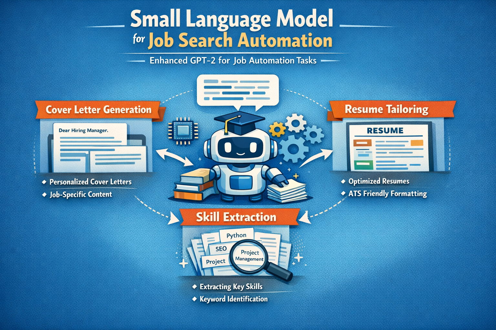
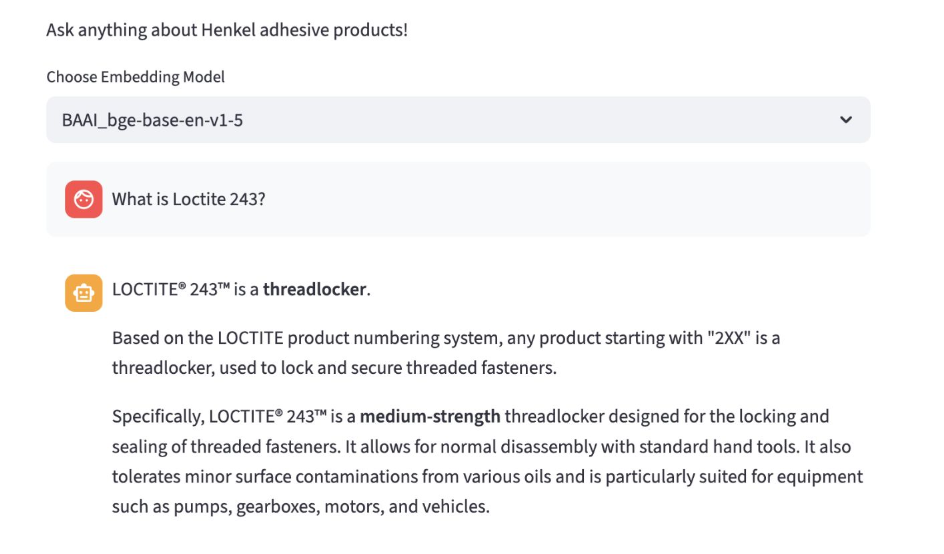

Projects

Small LM Job Search Tool
Develop, train, fine-tune GPT2 for job search automation, featuring cover letter generation, resume tailoring, and skill extraction.
Data curation
Architecture optimization
Small Language Model

Text-to-SQL App
A full-stack application that turns user text into database queries to allow non-technical users to access and analyze needed data ASAP.
FastAPI
Databases
ReactJS

Adhesive Products Q&A Chatbot
A Retrieval-Augmented Generation (RAG) project designed for accurate, real-world product manual information retrieval.
OCR
RAG
Docker
AWS